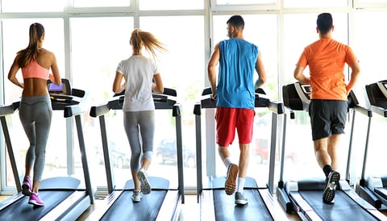

Fitness | Vogue España
 Skip to main content Edición España Arabia Australia Brasil Britain China Czechoslovakia Germany Greece Hong Kong India Italia Japan Korea México Nederland Paris Polska Portugal Russia Singapore Taiwan Thailand Türkiye Ukraine United States Suscribirse Open Navigation Menu Moda Belleza Living Pasarelas Celebrities TV Novias Vogue 365 Compras Business Vogue Shop
Skip to main content Edición España Arabia Australia Brasil Britain China Czechoslovakia Germany Greece Hong Kong India Italia Japan Korea México Nederland Paris Polska Portugal Russia Singapore Taiwan Thailand Türkiye Ukraine United States Suscribirse Open Navigation Menu Moda Belleza Living Pasarelas Celebrities TV Novias Vogue 365 Compras Business Vogue Shop
Fitness
Ponemos a tu disposición consejos para adelgazar y estar en forma, tablas de ejercicios,rutinas , todo lo que necesitas para tener una vida sana.
Todos los temas Pelo Nutricion Maquillaje Fitness Bienestar DeporteEntrenar con agujetas: ¿es buena idea?
Por Ana Gándara
9 de julio de 2021 FITNESSEjercicio físico y genética. ¿Deberíamos elegir el tipo de entrenamiento que hacemos en función de nuestros genes?
Por Ana Morales
28 de junio de 2021 FitnessLos mejores entrenamientos para trabajar todo el cuerpo ( a la vez)
Por Ana Gándara
25 de junio de 2021 FITNESSHacer ejercicio en ayunas por la mañana, ¿influye en la pérdida de peso?
Por Ana Morales
16 de junio de 2021 FitnessCalentamiento antes de entrenar: cómo hacerlo bien (para no lamentarte después)
Por Ana Gándara
11 de junio de 2021 FITNESS Y NUTRICIÓNEl PLAN para adelgazar caminando
Por Ana Morales
9 de junio de 2021 FitnessEsta disciplina desconocida (que te carga de energía) puede convertirse en tu nuevo yoga
Por Carmen Lanchares
30 de mayo de 2021 FITNESSEste es el primer paso para quemar grasa abdominal, según los creadores del canal de fitness más famoso de Japón
Por Ana Morales
27 de mayo de 2021 FitnessLos mejores ejercicios (de cardio y de fuerza) para trabajar muslos y piernas
Por Ana Gándara
25 de mayo de 2021 BIENESTARYoga en casa: clases online que ayudan a adelgazar de forma saludable
Por Ana Morales
19 de mayo de 2021 FITNESSCómo empezar a correr a los 50: las recomendaciones de los expertos
Por Ana Morales
12 de mayo de 2021 DeporteVolver a hacer deporte tras una operación estética: todo lo que debes saber
Por Ana Gándara
11 de mayo de 2021 EJERCICIO FÍSICOCaminar por intervalos de intensidad: una forma de adelgazar (muy) efectiva
Por Ana Morales
4 de mayo de 2021 EntrenamientoLos mejores ejercicios para trabajar los tríceps (y tonificar los brazos)
Por Ana Gándara
29 de abril de 2021 Vogue para ReebokEntrenamiento en casa con Ffitcoco y las nuevas Reebok Nano X1: cuatro rutinas para tonificar tu cuerpo
Por Vogue para Reebok
27 de abril de 2021 icon BellezaRopa de deporte para entrenar en casa: 8 prendas y accesorios imprescindibles
Por Vogue para Reebok
27 de abril de 2021 FITNESSCómo entrenar sin sudar (casi) o por qué este es el ejercicio que necesitas para ponerte en forma
Por Carmen Lanchares
22 de abril de 2021 FITNESSSí, el look de Jane Fonda ayuda a hacer ejercicio de forma mucho más efectiva
Por Ana Morales
20 de abril de 2021 EntrenamientoGuía de iniciación al deporte y una rutina de ejercicios para (muy) principiantes
Por Ana Gándara
15 de abril de 2021 FITNESSEl mejor ejercicio para perder grasa abdominal no es precisamente el entrenamiento de cardio
Por Ana Morales
13 de abril de 2021 FitnessCómo perder grasa abdominal para tener un vientre tonificado
Por Ana Morales
8 de abril de 2021 FITNESSGlúteos firmes: los mejores vídeos para entrenarlos en casa
Por Ana Morales
7 de abril de 2021 Fitness‘Indoor walking’: los entrenamientos caminando (dentro de casa) que triunfan online
Por Ana Gándara
30 de marzo de 2021 FITNESS¿Es más efectivo entrenar 40 minutos seguidos o 20 por la mañana y 20 por la tarde?
Por Ana Morales
25 de marzo de 2021 CuerpoTodavía estás a tiempo de corregir la postura de tu espalda (si sigues estos consejos fitness)
Por Ana Gándara
21 de marzo de 2021 FITNESSHacer este ejercicio durante 60 segundos fortalece el abdomen y alivia el dolor de espalda. Lo dice Harvard
Por Ana Morales
16 de marzo de 2021 FitnessTrip: el entrenamiento inmersivo que te hará viajar y estar en forma a la vez
Por Ángela García
10 de marzo de 2021 FITNESSEva Nasarre, la mujer que enseñó a hacer deporte a todo un país
Por Paloma Abad
27 de febrero de 2021 BellezaEntrenar en casa: 7 plataformas de fitness en streaming para hacer ejercicio de forma virtual
Por Ana Morales
24 de febrero de 2021 MitosBailar ¿es (o no) un deporte?
Por Carmen Lanchares
21 de febrero de 2021 BellezaYoga integral, el yoga curativo que puedes practicar sin ser experta
Por Itziar Salcedo
20 de febrero de 2021 EntrenamientosLas disciplinas de fitness (nada convencionales) que sí te motivarán a hacer deporte
Por Ana Gándara
17 de febrero de 2021 CUERPOLos 9 mandamientos de Harvard para tener un abdomen fuerte y tonificado
Por Ana Morales
8 de febrero de 2021 Fitness6 ejercicios con mancuernas con los que tonificar brazos (y todo el cuerpo)
Por Ana Gándara
4 de febrero de 2021 FitnessEsto es todo lo que tienes que saber sobre AMRAP, la técnica de fitness con la que te pondrás en forma en tiempo récord
Por Hannah Coates
2 de febrero de 2021 FITNESSLas mejores clases de barre para tonificar piernas, glúteos y abdomen (en casa)
Por Ana Morales
1 de febrero de 2021 FITNESSEstos son los ejercicios de empoderamiento que todas las mujeres deberían probar
Por Carmen Lanchares
21 de enero de 2021 FITNESSCómo empezar a hacer deporte (incluso después de varios meses sin hacer nada)
Por Zoe Ruffner
16 de enero de 2021 FITNESSEjercicios de pilates en casa: las mejores clases online para tener un abdomen plano
Por Ana Morales
14 de enero de 2021 ENTRENAMIENTOEjercicio en casa o el reto fitness de 21 días con el que voy a entrenar media hora diaria
Por Ana Morales
12 de enero de 2021 ENTRENAMIENTOCómo cumplir (de verdad) tu rutina de ejercicios
Por Isabel Puentes
10 de enero de 2021 Fitness5 deportes que te darán un chute extra de energía al instante
Por Avanti Dalal
9 de enero de 2021 FITNESSEntrenamiento metabólico o cómo hacer ejercicio cardiovascular y de fuerza (en 20 minutos) para perder peso
Por Ana Morales
7 de enero de 2021 FitnessOlvida el gimnasio y pásate al patinaje sobre hielo: es el mejor deporte que puedes hacer en invierno
Por Celia Ellenberg
6 de enero de 2021 FITNESSEjercicio después de un día de excesos con la comida. ¿Es mejor cardio o entrenamiento de fuerza?
Por Ana Morales
21 de diciembre de 2020 FITNESSMarcha nórdica o cómo hacer ejercicio en 2021
Por Ana Morales
14 de diciembre de 2020 FitnessCómo trabajar los abdominales de pie (si tienes problemas de espalda)
Por Ana Gándara
10 de diciembre de 2020 FITNESSEjercicios de fuerza: ¿Antes o después del entrenamiento de cardio?
Por Ana Morales
30 de noviembre de 2020 MitosEl deporte fortalece una parte de tu cuerpo en la que no sueles pensar (por ahora)
Por Carmen Lanchares
29 de noviembre de 2020 FitnessLa tabla ilustrada para hacer un entrenamiento HIIT en casa
Por Ana Gándara
26 de noviembre de 2020 FITNESSEjercicios de glúteos: todo lo que necesitas saber para entrenar esta parte de tu cuerpo
Por Ana Morales
18 de noviembre de 2020 MitosAndar no es aburrido. 9 razones que te pondrán en marcha
Por Carmen Lanchares
8 de noviembre de 2020 Belleza7 entrenadoras a las que seguir para hacer ejercicio en casa (y engancharse)
Por Ana Morales
4 de noviembre de 2020 MitosEl mejor ejercicio para fortalecer glúteos no son las sentadillas
Por Carmen Lanchares
1 de noviembre de 2020 FitnessEjercicio en casa: los mejores accesorios para el entrenamiento de fuerza y cardio en pisos pequeños
Por Lucía Tejo
27 de octubre de 2020 FITNESSLos 6 mejores ejercicios con bandas elásticas para tonificar todo el cuerpo
Por Ana Morales
21 de octubre de 2020 FitnessCómo conseguir los brazos de Jennifer Aniston
Por Lauren Murdoch-Smith
19 de octubre de 2020 Mitos5 razones (además del dolor) para ir al fisioterapeuta y 5 mitos que desterrar
Por Carmen Lanchares
18 de octubre de 2020 BellezaEl equilibrio se puede (y debe) entrenar. Te contamos cómo y por qué
Por Carmen Lanchares
17 de octubre de 2020 Espía10 cosas que aprendí sobre fitness y nutrición leyendo el libro de Paula Ordovás
Por Ana Gándara
16 de octubre de 2020 Fitness¿Qué le pasa a tu cuerpo cuando dejas de hacer ejercicio?
Por Ana Gándara
13 de octubre de 2020 MitosEntrenar el core no es matarse a hacer abdominales
Por Carmen Lanchares
12 de octubre de 2020 EjercicioRoller dance, el baile que hará del patinaje tu próxima obsesión
Por Susana Molina
2 de octubre de 2020 DEPORTEEjercicio en casa: los accesorios fitness que recomiendan los expertos
Por Ana Morales
30 de septiembre de 2020 FITNESSEl tiempo que hay que entrenar a la semana para tener un cuerpo tonificado
Por Ana Morales
23 de septiembre de 2020 FitnessCómo ejercitar los oblicuos, los grandes olvidados de la zona abdominal
Por Ana Gándara
15 de septiembre de 2020 FITNESSAsí deberías entrenar si solo tienes 20-30 minutos al día para hacer ejercicio
Por Ana Morales
14 de septiembre de 2020 FITNESSHago ejercicio físico pero no tengo el abdomen tonificado. ¿Por qué?
Por Ana Morales
8 de septiembre de 2020 Mitos¿Por qué hacer estiramientos? Hay más razones de las que pensabas
Por Carmen Lanchares
6 de septiembre de 2020 FITNESSEntrenamiento ‘Apartment Friendly’: rutinas de ejercicios que puedes hacer en un espacio pequeño
Por Ana Morales
3 de septiembre de 2020 CUIDADO DE LA PIELCómo convertir una sesión de ejercicio en casa en un tratamiento de belleza para la piel
Por Ana Morales
27 de agosto de 2020 Fitness¿Combinar yoga y cardio en un mismo entrenamiento? Sí, es posible con esta disciplina
Por Ana Gándara
26 de agosto de 2020
Más en Vogue
Moda Belleza Living Pasarelas Celebrities TV Novias Vogue 365 Compras Business Vogue ShopCondé Nast España
Glamour Vogue Vanity Fair Traveler GQ AD Quiénes somos Condiciones de uso Política de privacidad Bases legales de concursos Gestión Medioambiental Publicidad Política de cookies Instrucciones Adblocker Newsletter Suscríbete a Vogue Política de afiliación No deseo compartir mi información personal© 2021 CONDENET IBERICA S.L. Todos los derechos reservados.
Select international site España Arabia Australia Brasil Britain China Czechoslovakia Germany Greece Hong Kong India Italia Japan Korea México Nederland Paris Polska Portugal Russia Singapore Taiwan Thailand Türkiye Ukraine United States